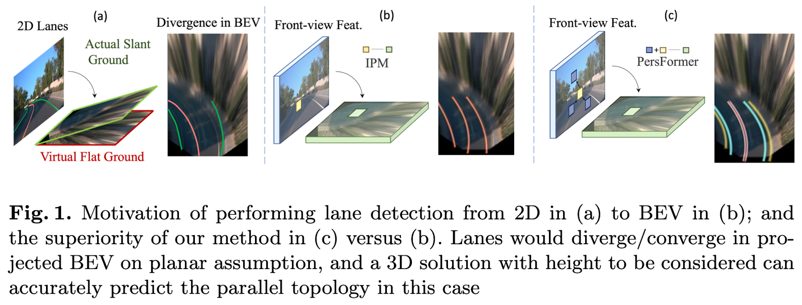
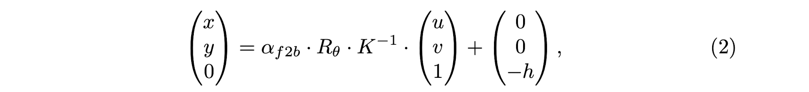

PersFormer: 3D Lane Detection via Perspective Transformer and the OpenLane Benchmark
Abstract
- Previous work struggled in complex cases due to their simple designs of the spatial transformation between front view and bird's eye view (BEV) and the lack of a realistic dataset.
- PersFormer: an end-to-end monocular 3D lane detector with a novel Transformer-based spatial feature transformation module.
- OpenLane: one of the first large-scale real-world 3D lane datasets, with high-quality annotation and scenario diversity.
Introduction
2D Lane Detection
With the prosperity of deep learning, lane detection algorithms in the 2D image space has achieved impressive results, where the task is formulated as a 2D segmentation problem given front view (perspective) image as input.
Warning
Such a framework to perform lane detection in the perspective view is not applicable for industry-level products where complicated scenarios dominate.
BEV Perception
Downstream modules as in planning and control often require the lane location to be in the form of the orthographic bird's eye view (BEV) instead of a front view representation. Representation in BEV is for better task alignment with interactive agents (vehicle, road marker, traffic light, etc.) in the environment and multi-modal compatibility with other sensors such as LiDAR and Radar.
The conventional approaches to address such a demand are:
- either to simply project perspective lanes to ones in the BEV space,
- or more elegantly to cast perspective features to BEV by aid of camera in/extrinsic matrices.
Spatial Transformer
The latter solution is inspired by the spatial transformer network (STN) to generate a one-to-one correspondence from the image to BEV feature grids. By doing so, the quality of features in BEV depends solely on the quality of the corresponding feature in the front view.
Warning
The predictions using these outcome features are not adorable as the blemish of scale variance in the front view, which inherits from the camera's pinhole model, remains.
Lane Line Height
The height of lane lines has to be considered when we project perspective lanes into BEV space.

The lanes would diverge/converge in case of uphill/downhill if the height is ignored, if the height is ignored, leading to improper action decisions as in the planning and control module. Previous literature inevitably hypothesize that lanes in the BEV space lie on a flat ground, i.e., the height of lanes is zero. The planar assumption does not hold true in most autonomous driving scenarios, e.g., uphill/downhill, bump, crush turn, etc.
Failure
Since the height information is unavailable on public benchmarks or complicated to acquire accurate ground truth, 3D lane detection is ill-posed.
PersFormer
A unified 2D/3D lane detection framework with Transformer.
Transformer-based Spatial Feature Transformation Module
They model the spatial feature transformation as a learning procedure that has an attention mechanism to capture the interaction both among local region in the front view feature and between two views (front view to BEV), consequently being able to generate a fine-grained BEV feature representation.
- the deformable attention mechanism is adopted to remarkably reduce the computational memory requirement.
- dynamically adjust keys through the cross-attention module to capture prominent feature among the local region.
Unified 2D and 3D Lane Detection Tasks
They further unify 2D and 3D lane detection tasks to benefit from the co-learning optimization.
Related Work
Vision Transformers in Bird's-Eye-View (BEV)
Note
Projecting features to BEV and performing downstream tasks in it has become more dominant and ensured better performance recently.
Compared with conventional CNN structure, the cross attention scheme in Vision Transformers is naturally introduced to serve as a learnable transformation of features across different views. Instead of simply projecting features via IPM, the successful application of Transformers in view transformation has demonstrated great success in various domains, including 3D object detection, prediction, planning, etc.
3D Lane Detection
- 3D-LaneNet: End-to-End 3D Multiple Lane Detection (ICCV 2019)
- Gen-LaneNet: A Generalized and Scalable Approach for 3D Lane Detection (ECCV 2020)
- Keep your Eyes on the Lane: Real-time Attention-guided Lane Detection (CVPR 2021)
Methodology
2D/3D lane attributes:
- ordered set of coordinates
- categorical attribute indicating the type of lane
- each point has its visibility attribute
Approach Overview

- The backbone takes the resized image as input and generates multi-scale front view features where EfficientNet is adopted.
- The Perspective Transformer takes the front view features as input and generates BEV features by the aid of camera intrinsic and extrinsic parameters.
- The lane detection heads are responsible for predicting 2D/3D coordinates as well as lane types. The 2D/3D detection heads are referred to as LaneATT and 3D-LaneNet with modification on the structure and anchor design.
Proposed Perspective Transformer
Note
The general idea of Perspective Transformer is to use the coordinates transformation matrix from IPM as a reference to generate BEV feature representation, by attending related region (local context) in front view feature.
On the assumption that the ground is flat and the camera parameters are given, a classical IPM approach calculates a set of coordinate mapping from front-view to BEV, where the BEV space is defined on the flat ground.

Such a transformation enframes a strong prior on the attention unit in PersFormer to generate more representative BEV features.
Tip
The architecture of Perspective Transformer is inspired by popular approaches such as DETR, and consists of the self-attention module and cross-attention module.